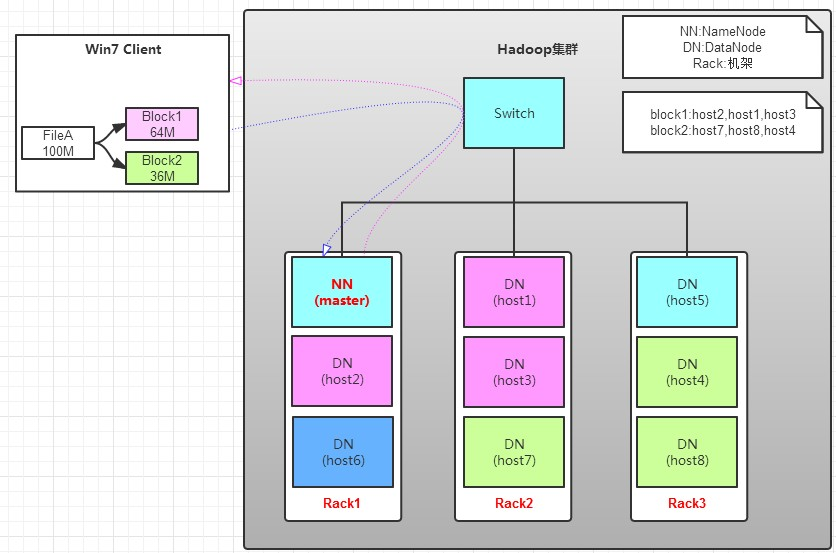
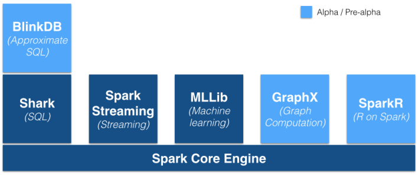

<!DOCTYPE html>
<html lang="zh">
<head><meta name="generator" content="Hexo 3.8.0">
    <meta charset="utf-8">
    
    <title>大数据基础框架 | FEI&#39;s Blog</title>
    
    
        <meta name="keywords" content="HDFS">
    
    <meta name="viewport" content="width=device-width, initial-scale=1, maximum-scale=1">
    <meta name="description" content="大数据系统最初由google公布的一篇论文引起，后来发展出hadoop和一系列工具，后来又有spark，本文介绍在大数据处理领域一些常用工具的基本原理。">
<meta name="keywords" content="HDFS">
<meta property="og:type" content="article">
<meta property="og:title" content="大数据基础框架">
<meta property="og:url" content="http://ff120.github.io/hexoblog/2017/10/06/技术/大数据/大数据基础框架/index.html">
<meta property="og:site_name" content="FEI&#39;s Blog">
<meta property="og:description" content="大数据系统最初由google公布的一篇论文引起，后来发展出hadoop和一系列工具，后来又有spark，本文介绍在大数据处理领域一些常用工具的基本原理。">
<meta property="og:locale" content="zh-Hans">
<meta property="og:image" content="http://ff120.github.io/hexoblog/2017/10/06/技术/大数据/大数据基础框架/26162921-2de9d28df9b54fe6a97a6fd88f1cb03f.jpg">
<meta property="og:image" content="http://ff120.github.io/hexoblog/2017/10/06/技术/大数据/大数据基础框架/26163017-fc613879835c402886b75e0593ca52ed.jpg">
<meta property="og:image" content="http://ff120.github.io/hexoblog/2017/10/06/技术/大数据/大数据基础框架/x.png">
<meta property="og:image" content="http://ff120.github.io/hexoblog/2017/10/06/技术/大数据/大数据基础框架/1.png">
<meta property="og:image" content="http://ff120.github.io/hexoblog/2017/10/06/技术/大数据/大数据基础框架/spark-stack-new.png">
<meta property="og:image" content="http://ff120.github.io/hexoblog/2017/10/06/技术/大数据/大数据基础框架/QQ截图20171007212611.png">
<meta property="og:updated_time" content="2019-03-28T00:54:55.378Z">
<meta name="twitter:card" content="summary">
<meta name="twitter:title" content="大数据基础框架">
<meta name="twitter:description" content="大数据系统最初由google公布的一篇论文引起，后来发展出hadoop和一系列工具，后来又有spark，本文介绍在大数据处理领域一些常用工具的基本原理。">
<meta name="twitter:image" content="http://ff120.github.io/hexoblog/2017/10/06/技术/大数据/大数据基础框架/26162921-2de9d28df9b54fe6a97a6fd88f1cb03f.jpg">
    

    
        <link rel="alternate" href="/atom.xml" title="FEI&#39;s Blog" type="application/atom+xml">
    

    
        <link rel="icon" href="/hexoblog/favicon.ico">
    

    <link rel="stylesheet" href="/hexoblog/libs/font-awesome/css/font-awesome.min.css">
    <link rel="stylesheet" href="/hexoblog/libs/open-sans/styles.css">
    <link rel="stylesheet" href="/hexoblog/libs/source-code-pro/styles.css">

    <link rel="stylesheet" href="/hexoblog/css/style.css">
    <script src="/hexoblog/libs/jquery/2.1.3/jquery.min.js"></script>
    <script src="/hexoblog/libs/jquery/plugins/cookie/1.4.1/jquery.cookie.js"></script>
    
    
        <link rel="stylesheet" href="/hexoblog/libs/lightgallery/css/lightgallery.min.css">
    
    
        <link rel="stylesheet" href="/hexoblog/libs/justified-gallery/justifiedGallery.min.css">
    
    
    
    


    
        <script async src="//busuanzi.ibruce.info/busuanzi/2.3/busuanzi.pure.mini.js"></script>
    
</head>
</html>
<body>
    <div id="container">
        <header id="header">
    <div id="header-main" class="header-inner">
        <div class="outer">
            <a href="/hexoblog/" id="logo">
                <i class="logo"></i>
                <span class="site-title">FEI&#39;s Blog</span>
            </a>
            <nav id="main-nav">
                
                    <a class="main-nav-link" href="/hexoblog/">首页</a>
                
                    <a class="main-nav-link" href="/hexoblog/archives">归档</a>
                
                    <a class="main-nav-link" href="/hexoblog/categories">分类</a>
                
                    <a class="main-nav-link" href="/hexoblog/tags">标签</a>
                
                    <a class="main-nav-link" href="/hexoblog/about">关于</a>
                
            </nav>
            
            <div id="search-form-wrap">

    <form class="search-form">
        <input type="text" class="ins-search-input search-form-input" placeholder="Rechercher">
        <button type="submit" class="search-form-submit"></button>
    </form>
    <div class="ins-search">
    <div class="ins-search-mask"></div>
    <div class="ins-search-container">
        <div class="ins-input-wrapper">
            <input type="text" class="ins-search-input" placeholder="Type something...">
            <span class="ins-close ins-selectable"><i class="fa fa-times-circle"></i></span>
        </div>
        <div class="ins-section-wrapper">
            <div class="ins-section-container"></div>
        </div>
    </div>
</div>
<script>
(function (window) {
    var INSIGHT_CONFIG = {
        TRANSLATION: {
            POSTS: 'Articles',
            PAGES: 'Pages',
            CATEGORIES: 'Catégories',
            TAGS: 'Tags',
            UNTITLED: '(Untitled)',
        },
        ROOT_URL: '/hexoblog/',
        CONTENT_URL: '/hexoblog/content.json',
    };
    window.INSIGHT_CONFIG = INSIGHT_CONFIG;
})(window);
</script>
<script src="/hexoblog/js/insight.js"></script>

</div>
        </div>
    </div>
    <div id="main-nav-mobile" class="header-sub header-inner">
        <table class="menu outer">
            <tr>
                
                    <td><a class="main-nav-link" href="/hexoblog/">首页</a></td>
                
                    <td><a class="main-nav-link" href="/hexoblog/archives">归档</a></td>
                
                    <td><a class="main-nav-link" href="/hexoblog/categories">分类</a></td>
                
                    <td><a class="main-nav-link" href="/hexoblog/tags">标签</a></td>
                
                    <td><a class="main-nav-link" href="/hexoblog/about">关于</a></td>
                
                <td>
                    
    <div class="search-form">
        <input type="text" class="ins-search-input search-form-input" placeholder="Rechercher">
    </div>

                </td>
            </tr>
        </table>
    </div>
</header>

        <div class="outer">
            
            
                <aside id="sidebar">
   
        
    <div class="widget-wrap" id="categories">
        <h3 class="widget-title">
            <span>Catégories</span>
            &nbsp;
            <a id="allExpand" href="#">
                <i class="fa fa-angle-double-down fa-2x"></i>
            </a>
        </h3>
        
        
        
         <ul class="unstyled" id="tree"> 
                    <li class="directory">
                        <a href="#" data-role="directory">
                            <i class="fa fa-folder"></i>
                            &nbsp;
                            心理学
                        </a>
                         <ul class="unstyled" id="tree"> 
                    <li class="directory">
                        <a href="#" data-role="directory">
                            <i class="fa fa-folder"></i>
                            &nbsp;
                            记忆魔法
                        </a>
                         <ul class="unstyled" id="tree">  <li class="file"><a href="/hexoblog/2019/04/03/心理学/记忆魔法/代码记忆法/">代码记忆法</a></li>  </ul> 
                    </li> 
                     </ul> 
                    </li> 
                    
                    <li class="directory open">
                        <a href="#" data-role="directory">
                            <i class="fa fa-folder-open"></i>
                            &nbsp;
                            技术
                        </a>
                         <ul class="unstyled" id="tree"> 
                    <li class="directory">
                        <a href="#" data-role="directory">
                            <i class="fa fa-folder"></i>
                            &nbsp;
                            Web开发
                        </a>
                         <ul class="unstyled" id="tree">  <li class="file"><a href="/hexoblog/2016/06/11/技术/Web开发/后台开发_How-to-install-Laravel-framework/">How to install Laravel framework</a></li>  <li class="file"><a href="/hexoblog/2016/06/11/技术/Web开发/后台开发_laravel-4-note-01/">laravel 4 note 01</a></li>  <li class="file"><a href="/hexoblog/2016/06/11/技术/Web开发/后台开发_Make-phpStorm-friendly-to-laravel/">Make phpStorm friendly to laravel</a></li>  <li class="file"><a href="/hexoblog/2016/06/11/技术/Web开发/后台开发_sublime-Text-tricks/">sublime Text tricks</a></li>  <li class="file"><a href="/hexoblog/2016/06/11/技术/Web开发/后台开发_think-php-note-01/">think php note 01</a></li>  <li class="file"><a href="/hexoblog/2016/06/11/技术/Web开发/后台开发_think-php-note-02/">think php note 02</a></li>  <li class="file"><a href="/hexoblog/2016/06/11/技术/Web开发/后台开发_think-php-note-03/">think php note 03</a></li>  <li class="file"><a href="/hexoblog/2016/06/11/技术/Web开发/后台开发_PHP编译less文件-lessphp的使用/">PHP编译less文件-lessphp的使用</a></li>  <li class="file"><a href="/hexoblog/2016/06/11/技术/Web开发/后台开发_Lavarel-后台组件frozenode的使用/">Lavarel 后台组件frozenode的使用</a></li>  <li class="file"><a href="/hexoblog/2016/06/11/技术/Web开发/后台开发_Linux常用命令/">Linux常用命令</a></li>  <li class="file"><a href="/hexoblog/2016/06/11/技术/Web开发/后台开发_Linux主机之间同步文件/">Linux主机之间同步文件</a></li>  <li class="file"><a href="/hexoblog/2016/06/11/技术/Web开发/后台开发_PHP基本操作/">PHP基本操作</a></li>  <li class="file"><a href="/hexoblog/2016/06/11/技术/Web开发/后台开发_短信验证码的实现/">短信验证码的实现</a></li>  <li class="file"><a href="/hexoblog/2016/06/11/技术/Web开发/后台开发_配置Apache支持使用HTTPS/">配置Apache支持使用HTTPS</a></li>  <li class="file"><a href="/hexoblog/2016/06/11/技术/Web开发/测试_使用Selenium测试UI/">测试_使用Selenium测试UI</a></li>  <li class="file"><a href="/hexoblog/2016/06/11/技术/Web开发/后台开发_PhpStorm常用快捷键/">PhpStorm常用快捷键</a></li>  <li class="file"><a href="/hexoblog/2016/06/11/技术/Web开发/微信开发_微信发送消息PHP-SDK/">微信发送消息PHP SDK</a></li>  <li class="file"><a href="/hexoblog/2016/06/11/技术/Web开发/微信开发_获取地理位置/">微信获取地理位置 </a></li>  <li class="file"><a href="/hexoblog/2016/06/11/技术/Web开发/微信开发_发送模板消息的代码/">微信发送模板消息的代码</a></li>  <li class="file"><a href="/hexoblog/2016/06/11/技术/Web开发/测试_Selenium-定位元素的几种方式/">测试_Selenium定位元素的几种方式</a></li>  <li class="file"><a href="/hexoblog/2016/06/11/技术/Web开发/测试_Selenium-Action/">测试_Selenium Action</a></li>  <li class="file"><a href="/hexoblog/2016/06/11/技术/Web开发/测试_Apache-JMeter的使用/">测试_Apache JMeter的使用</a></li>  <li class="file"><a href="/hexoblog/2016/06/12/技术/Web开发/后台开发_Apache-配置虚拟主机/">Apache 配置虚拟主机</a></li>  <li class="file"><a href="/hexoblog/2016/06/23/技术/Web开发/后台开发_改进PHP的var-dump-方法使之适应显示从数据库中查出来的数据/">改进PHP的var_dump()方法使之适应显示从数据库中查出来的数据</a></li>  <li class="file"><a href="/hexoblog/2016/06/23/技术/Web开发/后台开发_PHP读写XLS/">PHP读写XLS</a></li>  <li class="file"><a href="/hexoblog/2016/06/30/技术/Web开发/前端_jQuery-EasyUI-学习笔记/">JQuery EasyUI 学习笔记</a></li>  <li class="file"><a href="/hexoblog/2016/06/30/技术/Web开发/前端_bootsharp学习笔记/">Bootsharp学习笔记</a></li>  </ul> 
                    </li> 
                    
                    <li class="directory">
                        <a href="#" data-role="directory">
                            <i class="fa fa-folder"></i>
                            &nbsp;
                            专业术语
                        </a>
                         <ul class="unstyled" id="tree">  <li class="file"><a href="/hexoblog/2017/07/24/技术/专业术语/术语/">英语</a></li>  </ul> 
                    </li> 
                    
                    <li class="directory open">
                        <a href="#" data-role="directory">
                            <i class="fa fa-folder-open"></i>
                            &nbsp;
                            大数据
                        </a>
                         <ul class="unstyled" id="tree">  <li class="file"><a href="/hexoblog/2016/06/23/技术/大数据/大数据_Spark环境下的Kmeans-Python实现/">Spark环境下的Kmeans-Python实现</a></li>  <li class="file active"><a href="/hexoblog/2017/10/06/技术/大数据/大数据基础框架/">大数据基础框架</a></li>  </ul> 
                    </li> 
                    
                    <li class="directory">
                        <a href="#" data-role="directory">
                            <i class="fa fa-folder"></i>
                            &nbsp;
                            工具
                        </a>
                         <ul class="unstyled" id="tree"> 
                    <li class="directory">
                        <a href="#" data-role="directory">
                            <i class="fa fa-folder"></i>
                            &nbsp;
                            AutoHotKey
                        </a>
                         <ul class="unstyled" id="tree">  <li class="file"><a href="/hexoblog/2018/12/02/技术/工具/AutoHotKey/AutoHotKey非常有用的脚本/">AutoHotKey非常有用的脚本</a></li>  </ul> 
                    </li> 
                    
                    <li class="directory">
                        <a href="#" data-role="directory">
                            <i class="fa fa-folder"></i>
                            &nbsp;
                            Git
                        </a>
                         <ul class="unstyled" id="tree">  <li class="file"><a href="/hexoblog/2017/05/04/技术/工具/Git/GIT的使用01-基本功能/">GIT的使用01-基本功能</a></li>  <li class="file"><a href="/hexoblog/2018/07/29/技术/工具/Git/Git查询手册/">Git 手册</a></li>  </ul> 
                    </li> 
                    
                    <li class="directory">
                        <a href="#" data-role="directory">
                            <i class="fa fa-folder"></i>
                            &nbsp;
                            Hexo
                        </a>
                         <ul class="unstyled" id="tree">  <li class="file"><a href="/hexoblog/2016/06/12/技术/工具/Hexo/Hexo的使用02-同步/">Hexo的使用02-同步</a></li>  <li class="file"><a href="/hexoblog/2016/06/13/技术/工具/Hexo/Hexo的使用01-搭建/">Hexo的使用01-搭建</a></li>  <li class="file"><a href="/hexoblog/2017/04/12/技术/工具/Hexo/Hexo的使用05-Atom编辑器/">Hexo的使用05-Atom编辑器</a></li>  <li class="file"><a href="/hexoblog/2017/04/12/技术/工具/Hexo/Hexo的使用04-数学公式/">Hexo的使用04-数学公式</a></li>  <li class="file"><a href="/hexoblog/2017/05/05/技术/工具/Hexo/Hexo的使用03-迁移/">Hexo的使用03-迁移</a></li>  <li class="file"><a href="/hexoblog/2017/07/17/技术/工具/Hexo/Hexo的使用06-使用gist存储代码片段/">Hexo中使用gist存储代码片段</a></li>  </ul> 
                    </li> 
                    
                    <li class="directory">
                        <a href="#" data-role="directory">
                            <i class="fa fa-folder"></i>
                            &nbsp;
                            Visio
                        </a>
                         <ul class="unstyled" id="tree">  <li class="file"><a href="/hexoblog/2017/05/05/技术/工具/Visio/VISIO的使用01-基础入门/">VISIO的使用01-基础入门</a></li>  </ul> 
                    </li> 
                    
                    <li class="directory">
                        <a href="#" data-role="directory">
                            <i class="fa fa-folder"></i>
                            &nbsp;
                            图片处理
                        </a>
                         <ul class="unstyled" id="tree">  <li class="file"><a href="/hexoblog/2017/05/05/技术/工具/图片处理/图片处理02-一寸照片/">图片处理02-一寸照片</a></li>  <li class="file"><a href="/hexoblog/2017/05/17/技术/工具/图片处理/图片处理01-合并多张图片/">图片处理01-合并多张图片</a></li>  </ul> 
                    </li> 
                    
                    <li class="directory">
                        <a href="#" data-role="directory">
                            <i class="fa fa-folder"></i>
                            &nbsp;
                            正则表达式
                        </a>
                         <ul class="unstyled" id="tree">  <li class="file"><a href="/hexoblog/2018/07/29/技术/工具/正则表达式/正则表达式/">正则表达式</a></li>  </ul> 
                    </li> 
                    
                    <li class="directory">
                        <a href="#" data-role="directory">
                            <i class="fa fa-folder"></i>
                            &nbsp;
                            编程IDE
                        </a>
                         <ul class="unstyled" id="tree"> 
                    <li class="directory">
                        <a href="#" data-role="directory">
                            <i class="fa fa-folder"></i>
                            &nbsp;
                            Anaconda
                        </a>
                         <ul class="unstyled" id="tree">  <li class="file"><a href="/hexoblog/2017/04/18/技术/工具/编程IDE/Anaconda/Anaconda的使用01-基础/">Anaconda的使用01-基础</a></li>  </ul> 
                    </li> 
                    
                    <li class="directory">
                        <a href="#" data-role="directory">
                            <i class="fa fa-folder"></i>
                            &nbsp;
                            JetBrainsCLion
                        </a>
                         <ul class="unstyled" id="tree">  <li class="file"><a href="/hexoblog/2017/05/04/技术/工具/编程IDE/JetBrainsCLion/JetBrainsCLion的使用01-入门/">JetBrainsCLion的使用01-入门</a></li>  </ul> 
                    </li> 
                    
                    <li class="directory">
                        <a href="#" data-role="directory">
                            <i class="fa fa-folder"></i>
                            &nbsp;
                            VSCode
                        </a>
                         <ul class="unstyled" id="tree">  <li class="file"><a href="/hexoblog/2017/07/24/技术/工具/编程IDE/VSCode/Visual-Studio-Code使用技巧/">Visual Studio Code使用技巧</a></li>  </ul> 
                    </li> 
                     </ul> 
                    </li> 
                    
                    <li class="directory">
                        <a href="#" data-role="directory">
                            <i class="fa fa-folder"></i>
                            &nbsp;
                            网络软件
                        </a>
                         <ul class="unstyled" id="tree">  <li class="file"><a href="/hexoblog/2016/06/12/技术/工具/网络软件/Windows全局代理软件Proxifier/">Windows全局代理软件Proxifier</a></li>  <li class="file"><a href="/hexoblog/2016/06/12/技术/工具/网络软件/Windows手工修改路由表/">Windows手工修改路由表</a></li>  </ul> 
                    </li> 
                     </ul> 
                    </li> 
                    
                    <li class="directory">
                        <a href="#" data-role="directory">
                            <i class="fa fa-folder"></i>
                            &nbsp;
                            数据库
                        </a>
                         <ul class="unstyled" id="tree">  <li class="file"><a href="/hexoblog/2016/06/11/技术/数据库/数据库_Redis入门/">Redis入门</a></li>  <li class="file"><a href="/hexoblog/2016/06/12/技术/数据库/数据库_使用Database-Configuration-Assist-工具创建oracle数据库/">使用Database Configuration Assist 工具创建oracle数据库</a></li>  <li class="file"><a href="/hexoblog/2017/11/02/技术/数据库/SQL/">SQL</a></li>  </ul> 
                    </li> 
                    
                    <li class="directory">
                        <a href="#" data-role="directory">
                            <i class="fa fa-folder"></i>
                            &nbsp;
                            数据结构和算法
                        </a>
                         <ul class="unstyled" id="tree">  <li class="file"><a href="/hexoblog/2017/03/21/技术/数据结构和算法/算法专题_二维数组/">算法专题_二维数组</a></li>  <li class="file"><a href="/hexoblog/2017/03/21/技术/数据结构和算法/算法专题_矩阵和图/">矩阵和用矩阵表示的图的相关问题</a></li>  <li class="file"><a href="/hexoblog/2017/03/21/技术/数据结构和算法/算法专题_位运算/">算法专题_位运算</a></li>  <li class="file"><a href="/hexoblog/2017/03/23/技术/数据结构和算法/算法专题_链表/">算法专题_链表</a></li>  <li class="file"><a href="/hexoblog/2017/04/05/技术/数据结构和算法/算法专题_动态规划/">算法专题_动态规划</a></li>  <li class="file"><a href="/hexoblog/2017/04/06/技术/数据结构和算法/算法专题_图/">算法专题_图问题</a></li>  <li class="file"><a href="/hexoblog/2017/04/08/技术/数据结构和算法/做过的算法题汇总表/">做过的算法题汇总表</a></li>  <li class="file"><a href="/hexoblog/2017/04/09/技术/数据结构和算法/算法专题_二叉树/">算法专题_二叉树</a></li>  <li class="file"><a href="/hexoblog/2017/04/09/技术/数据结构和算法/算法专题_通用树结构/">算法专题_通用树结构</a></li>  <li class="file"><a href="/hexoblog/2017/04/10/技术/数据结构和算法/算法专题_大数据和空间限制/">算法专题_大数据和空间限制</a></li>  <li class="file"><a href="/hexoblog/2017/04/10/技术/数据结构和算法/算法专题_排列组合/">算法专题_排列组合</a></li>  <li class="file"><a href="/hexoblog/2017/04/11/技术/数据结构和算法/本地代码集锦/">本地代码集锦</a></li>  <li class="file"><a href="/hexoblog/2017/04/12/技术/数据结构和算法/算法专题_栈和队列/">算法专题_栈和队列</a></li>  <li class="file"><a href="/hexoblog/2017/04/16/技术/数据结构和算法/算法专题_排序算法/">算法专题_排序算法</a></li>  <li class="file"><a href="/hexoblog/2017/04/17/技术/数据结构和算法/算法专题_算法总结/">算法专题_算法总结</a></li>  <li class="file"><a href="/hexoblog/2017/05/02/技术/数据结构和算法/算法专题_一维数组/">算法专题_一维数组</a></li>  <li class="file"><a href="/hexoblog/2017/05/05/技术/数据结构和算法/算法专题_图之网络流/">算法专题_图之网络流</a></li>  <li class="file"><a href="/hexoblog/2017/05/06/技术/数据结构和算法/算法专题_图之最短路径/">算法专题_图之最短路径</a></li>  <li class="file"><a href="/hexoblog/2017/05/06/技术/数据结构和算法/算法专题_最小生成树/">算法专题_最小生成树</a></li>  <li class="file"><a href="/hexoblog/2017/05/06/技术/数据结构和算法/算法专题_霍夫曼编码/">算法专题_霍夫曼编码(哈夫曼编码)</a></li>  <li class="file"><a href="/hexoblog/2017/05/07/技术/数据结构和算法/Kickstart-Round-B-2017/">Kickstart Round B 2017</a></li>  <li class="file"><a href="/hexoblog/2017/05/08/技术/数据结构和算法/算法专题_模运算/">算法专题_模运算</a></li>  <li class="file"><a href="/hexoblog/2017/05/09/技术/数据结构和算法/算法专题_素数问题/">算法专题_素数问题</a></li>  <li class="file"><a href="/hexoblog/2017/05/11/技术/数据结构和算法/算法专题_计算几何/">算法专题_计算几何</a></li>  <li class="file"><a href="/hexoblog/2017/05/27/技术/数据结构和算法/计蒜之道2017程序设计大赛/">计蒜之道2017程序设计大赛</a></li>  <li class="file"><a href="/hexoblog/2017/05/28/技术/数据结构和算法/算法专题_字符串匹配/">算法专题_字符串匹配</a></li>  <li class="file"><a href="/hexoblog/2017/07/12/技术/数据结构和算法/四等分数组/">四等分数组</a></li>  <li class="file"><a href="/hexoblog/2017/07/12/技术/数据结构和算法/矩阵的遍历/">矩阵的遍历</a></li>  <li class="file"><a href="/hexoblog/2017/07/20/技术/数据结构和算法/N皇后问题/">N皇后问题</a></li>  <li class="file"><a href="/hexoblog/2017/07/23/技术/数据结构和算法/算法专题_线段树/">算法专题_线段树</a></li>  <li class="file"><a href="/hexoblog/2017/07/23/技术/数据结构和算法/算法专题_树状数组/">算法专题_树状数组</a></li>  <li class="file"><a href="/hexoblog/2017/07/23/技术/数据结构和算法/算法专题_并查集/">算法专题_并查集</a></li>  <li class="file"><a href="/hexoblog/2017/07/26/技术/数据结构和算法/算法专题_链表2/">算法专题_链表2</a></li>  <li class="file"><a href="/hexoblog/2017/08/06/技术/数据结构和算法/算法专题_二叉堆/">算法专题_二叉堆</a></li>  <li class="file"><a href="/hexoblog/2017/08/07/技术/数据结构和算法/算法专题_快速排序/">算法专题_快速排序</a></li>  <li class="file"><a href="/hexoblog/2017/08/07/技术/数据结构和算法/算法专题_归并排序/">算法专题_归并排序</a></li>  <li class="file"><a href="/hexoblog/2017/08/13/技术/数据结构和算法/算法专题-hihocoder/">算法专题_hihocoder</a></li>  <li class="file"><a href="/hexoblog/2017/08/17/技术/数据结构和算法/算法专题-贪心法/">算法专题_贪心法</a></li>  <li class="file"><a href="/hexoblog/2017/08/18/技术/数据结构和算法/阿里在线测评-兔子繁殖问题/">阿里笔试</a></li>  <li class="file"><a href="/hexoblog/2017/08/22/技术/数据结构和算法/今日头条-在线编程题/">今日头条_在线编程题</a></li>  <li class="file"><a href="/hexoblog/2017/08/23/技术/数据结构和算法/算法专题-字典树-Trie树/">算法专题_字典树(Trie树)</a></li>  <li class="file"><a href="/hexoblog/2017/09/23/技术/数据结构和算法/算法专题_二叉树2/">算法专题_二叉树2</a></li>  <li class="file"><a href="/hexoblog/2017/09/27/技术/数据结构和算法/手写代码-其他/">手写代码-其他</a></li>  <li class="file"><a href="/hexoblog/2017/10/03/技术/数据结构和算法/算法专题-常见题目/">算法专题_常见题目</a></li>  </ul> 
                    </li> 
                    
                    <li class="directory">
                        <a href="#" data-role="directory">
                            <i class="fa fa-folder"></i>
                            &nbsp;
                            机器学习
                        </a>
                         <ul class="unstyled" id="tree"> 
                    <li class="directory">
                        <a href="#" data-role="directory">
                            <i class="fa fa-folder"></i>
                            &nbsp;
                            深度学习
                        </a>
                         <ul class="unstyled" id="tree">  <li class="file"><a href="/hexoblog/2017/03/22/技术/机器学习/深度学习/深度学习_Theano使用技巧/">深度学习_Theano使用技巧</a></li>  <li class="file"><a href="/hexoblog/2017/04/18/技术/机器学习/深度学习/深度学习_基本概念/">深度学习_基本概念</a></li>  <li class="file"><a href="/hexoblog/2017/04/18/技术/机器学习/深度学习/深度学习_利用神经网络识别手写数字/">深度学习__利用神经网络识别手写数字</a></li>  <li class="file"><a href="/hexoblog/2017/04/19/技术/机器学习/深度学习/深度学习_反向传播算法及简单实例/">深度学习_反向传播算法及简单实例</a></li>  <li class="file"><a href="/hexoblog/2017/04/19/技术/机器学习/深度学习/深度学习_Keras使用技巧/">深度学习_Keras使用技巧</a></li>  <li class="file"><a href="/hexoblog/2017/04/20/技术/机器学习/深度学习/深度学习_使用keras实现autoencoder/">深度学习_使用keras实现autoencoder</a></li>  <li class="file"><a href="/hexoblog/2017/04/20/技术/机器学习/深度学习/深度学习_卷积神经网络/">深度学习_卷积神经网络</a></li>  <li class="file"><a href="/hexoblog/2017/04/27/技术/机器学习/深度学习/深度学习_使用autoencoder自动提取特征/">深度学习_使用autoencoder自动提取特征</a></li>  <li class="file"><a href="/hexoblog/2017/05/10/技术/机器学习/深度学习/深度学习_递归神经网络(RNN)/">深度学习_递归神经网络(RNN)</a></li>  <li class="file"><a href="/hexoblog/2017/05/10/技术/机器学习/深度学习/深度学习_限制波尔茨曼向量机(RBM)/">深度学习_限制波尔茨曼向量机(RBM)</a></li>  <li class="file"><a href="/hexoblog/2017/05/12/技术/机器学习/深度学习/深度学习_TensorFlow使用技巧/">深度学习_TensorFlow使用技巧</a></li>  </ul> 
                    </li> 
                     <li class="file"><a href="/hexoblog/2016/06/16/技术/机器学习/机器学习_Scikit-Learn-ManyClassifier/">同时使用多个分类器(Scikit-Learn)</a></li>  <li class="file"><a href="/hexoblog/2016/06/16/技术/机器学习/机器学习_范数/">机器学习_范数</a></li>  <li class="file"><a href="/hexoblog/2016/06/20/技术/机器学习/机器学习_学习路线/">机器学习_学习路线</a></li>  <li class="file"><a href="/hexoblog/2016/06/20/技术/机器学习/机器学习_手写数字识别/">机器学习_手写数字识别</a></li>  <li class="file"><a href="/hexoblog/2016/07/11/技术/机器学习/机器学习_Matplolib使用技巧/">机器学习_Matplolib使用技巧</a></li>  <li class="file"><a href="/hexoblog/2017/03/22/技术/机器学习/机器学习_人脸识别/">机器学习_人脸识别</a></li>  <li class="file"><a href="/hexoblog/2017/05/04/技术/机器学习/机器学习_Matlab使用技巧/">机器学习_Matlab使用技巧</a></li>  <li class="file"><a href="/hexoblog/2017/05/11/技术/机器学习/机器学习_时间序列预测分析算法/">机器学习_时间序列预测分析算法</a></li>  <li class="file"><a href="/hexoblog/2017/05/14/技术/机器学习/机器学习_Scikit-Learn使用技巧/">深度学习_Scikit-Learn机器学习算法的使用</a></li>  <li class="file"><a href="/hexoblog/2017/05/15/技术/机器学习/机器学习_时间序列预测の广告效果预测/">机器学习_时间序列预测の广告效果预测</a></li>  <li class="file"><a href="/hexoblog/2017/05/15/技术/机器学习/机器学习_算法汇总/">机器学习_算法汇总</a></li>  <li class="file"><a href="/hexoblog/2017/05/17/技术/机器学习/机器学习_Pandas使用技巧/">深度学习_Pandas使用技巧</a></li>  <li class="file"><a href="/hexoblog/2017/05/19/技术/机器学习/机器学习_感知机/">机器学习_感知机</a></li>  <li class="file"><a href="/hexoblog/2017/05/19/技术/机器学习/机器学习_逻辑回归/">机器学习_逻辑回归</a></li>  <li class="file"><a href="/hexoblog/2017/05/22/技术/机器学习/机器学习_损失函数/">机器学习_损失函数</a></li>  <li class="file"><a href="/hexoblog/2017/06/03/技术/机器学习/机器学习_分类器性能的度量/">机器学习_分类器性能的度量</a></li>  <li class="file"><a href="/hexoblog/2017/06/15/技术/机器学习/机器学习_Scipy使用技巧/">机器学习_Scipy使用技巧</a></li>  <li class="file"><a href="/hexoblog/2017/06/15/技术/机器学习/机器学习_Python使用技巧/">深度学习_Python使用技巧</a></li>  <li class="file"><a href="/hexoblog/2017/07/23/技术/机器学习/机器学习-Numpy使用技巧/">机器学习_Numpy使用技巧</a></li>  <li class="file"><a href="/hexoblog/2017/10/15/技术/机器学习/KNN-with-C/">KNN with C++</a></li>  <li class="file"><a href="/hexoblog/2017/11/04/技术/机器学习/机器学习-绪论-基本概念/">机器学习-绪论-基本概念</a></li>  <li class="file"><a href="/hexoblog/2017/11/04/技术/机器学习/机器学习-第一章-逻辑回归/">机器学习-第一章-逻辑回归</a></li>  <li class="file"><a href="/hexoblog/2017/11/04/技术/机器学习/机器学习-第二章-决策树/">机器学习-第二章-决策树</a></li>  <li class="file"><a href="/hexoblog/2017/11/04/技术/机器学习/机器学习-第三章-朴素贝叶斯/">机器学习-第三章-朴素贝叶斯</a></li>  <li class="file"><a href="/hexoblog/2017/11/04/技术/机器学习/机器学习-第四章-支持向量机/">机器学习-第四章-支持向量机</a></li>  <li class="file"><a href="/hexoblog/2017/11/04/技术/机器学习/机器学习-第五章-最近邻/">机器学习-第五章-最近邻</a></li>  <li class="file"><a href="/hexoblog/2017/11/04/技术/机器学习/机器学习-第六章-kmeans/">机器学习-第六章-kmeans</a></li>  <li class="file"><a href="/hexoblog/2017/11/04/技术/机器学习/机器学习-第七章-感知机/">机器学习-第七章-感知机</a></li>  </ul> 
                    </li> 
                    
                    <li class="directory">
                        <a href="#" data-role="directory">
                            <i class="fa fa-folder"></i>
                            &nbsp;
                            编程语言
                        </a>
                         <ul class="unstyled" id="tree"> 
                    <li class="directory">
                        <a href="#" data-role="directory">
                            <i class="fa fa-folder"></i>
                            &nbsp;
                            C++
                        </a>
                         <ul class="unstyled" id="tree">  <li class="file"><a href="/hexoblog/2017/04/07/技术/编程语言/C++/C++语言技巧/">C++语言技巧</a></li>  </ul> 
                    </li> 
                     </ul> 
                    </li> 
                    
                    <li class="directory">
                        <a href="#" data-role="directory">
                            <i class="fa fa-folder"></i>
                            &nbsp;
                            计算机基础
                        </a>
                         <ul class="unstyled" id="tree"> 
                    <li class="directory">
                        <a href="#" data-role="directory">
                            <i class="fa fa-folder"></i>
                            &nbsp;
                            计算机网络
                        </a>
                         <ul class="unstyled" id="tree">  <li class="file"><a href="/hexoblog/2016/06/12/技术/计算机基础/计算机网络/网络_校园网多终端上网方案/">校园网多终端上网方案</a></li>  <li class="file"><a href="/hexoblog/2017/07/12/技术/计算机基础/计算机网络/计算机网络/">计算机网络</a></li>  </ul> 
                    </li> 
                     </ul> 
                    </li> 
                    
                    <li class="directory">
                        <a href="#" data-role="directory">
                            <i class="fa fa-folder"></i>
                            &nbsp;
                            认知神经科学
                        </a>
                         <ul class="unstyled" id="tree">  <li class="file"><a href="/hexoblog/2016/06/12/技术/认知神经科学/文献检索方法/">文献检索方法</a></li>  <li class="file"><a href="/hexoblog/2016/06/12/技术/认知神经科学/参考文献书写格式/">参考文献书写格式</a></li>  <li class="file"><a href="/hexoblog/2016/06/12/技术/认知神经科学/使用Python处理fMRI数据/">使用Python处理fMRI数据</a></li>  <li class="file"><a href="/hexoblog/2016/06/22/技术/认知神经科学/中英文对照/">中英文对照</a></li>  <li class="file"><a href="/hexoblog/2017/01/03/技术/认知神经科学/circos入门教程/">circos入门教程</a></li>  <li class="file"><a href="/hexoblog/2017/03/08/技术/认知神经科学/基于视频的车牌识别和流量统计/">基于视频的车牌识别和流量统计</a></li>  <li class="file"><a href="/hexoblog/2017/03/08/技术/认知神经科学/基于贝叶斯网络和隐性知识的AU识别研究/">基于贝叶斯网络和隐性知识的AU识别研究</a></li>  <li class="file"><a href="/hexoblog/2017/03/09/技术/认知神经科学/基于连接的脑信息解码研究/">基于连接信息的脑信息解码研究</a></li>  <li class="file"><a href="/hexoblog/2017/03/09/技术/认知神经科学/认知神经科学系列目录/">认知神经科学系列目录</a></li>  <li class="file"><a href="/hexoblog/2017/03/20/技术/认知神经科学/多被试多RUN批量预处理(SPM)/">多被试多RUN批量预处理(SPM)</a></li>  <li class="file"><a href="/hexoblog/2017/03/20/技术/认知神经科学/SPM预处理中的常用操作/">SPM预处理中的常用操作</a></li>  <li class="file"><a href="/hexoblog/2017/03/20/技术/认知神经科学/动态因果模型(DCM)的批量定义和估计/">动态因果模型(DCM)的批量定义和估计</a></li>  <li class="file"><a href="/hexoblog/2017/04/13/技术/认知神经科学/使用SPM做Second-Level分析/">使用SPM做Second_Level分析</a></li>  <li class="file"><a href="/hexoblog/2017/04/13/技术/认知神经科学/DCM模型的定义和估计/">DCM模型的定义和估计</a></li>  <li class="file"><a href="/hexoblog/2017/04/14/技术/认知神经科学/XJVIEW的使用技巧/">XJVIEW的使用技巧</a></li>  <li class="file"><a href="/hexoblog/2017/04/14/技术/认知神经科学/SPM中函数的修改和使用/">SPM中函数的修改和使用</a></li>  <li class="file"><a href="/hexoblog/2017/05/02/技术/认知神经科学/fMRI中常用的工具包/">fMRI中常用的工具包</a></li>  <li class="file"><a href="/hexoblog/2017/05/11/技术/认知神经科学/使用3D卷积神经神经网络提取脑成像数据的特征/">使用3D卷积神经神经网络提取脑成像数据的特征</a></li>  <li class="file"><a href="/hexoblog/2017/05/14/技术/认知神经科学/fMRI相关的资源汇总/">fMRI相关的资源汇总</a></li>  <li class="file"><a href="/hexoblog/2017/05/30/技术/认知神经科学/fMRI相关问题汇总/">fMRI相关问题汇总</a></li>  </ul> 
                    </li> 
                     </ul> 
                    </li> 
                    
                    <li class="directory">
                        <a href="#" data-role="directory">
                            <i class="fa fa-folder"></i>
                            &nbsp;
                            收藏夹
                        </a>
                         <ul class="unstyled" id="tree">  <li class="file"><a href="/hexoblog/2017/03/22/收藏夹/博客集锦/">博客收藏</a></li>  </ul> 
                    </li> 
                     </ul> 
    </div>
    <script>
        $(document).ready(function() {
            var iconFolderOpenClass  = 'fa-folder-open';
            var iconFolderCloseClass = 'fa-folder';
            var iconAllExpandClass = 'fa-angle-double-down';
            var iconAllPackClass = 'fa-angle-double-up';
            // Handle directory-tree expansion:
            // 左键单独展开目录
            $(document).on('click', '#categories a[data-role="directory"]', function (event) {
                event.preventDefault();

                var icon = $(this).children('.fa');
                var expanded = icon.hasClass(iconFolderOpenClass);
                var subtree = $(this).siblings('ul');
                icon.removeClass(iconFolderOpenClass).removeClass(iconFolderCloseClass);
                if (expanded) {
                    if (typeof subtree != 'undefined') {
                        subtree.slideUp({ duration: 100 });
                    }
                    icon.addClass(iconFolderCloseClass);
                } else {
                    if (typeof subtree != 'undefined') {
                        subtree.slideDown({ duration: 100 });
                    }
                    icon.addClass(iconFolderOpenClass);
                }
            });
            // 右键展开下属所有目录
            $('#categories a[data-role="directory"]').bind("contextmenu", function(event){
                event.preventDefault();
                
                var icon = $(this).children('.fa');
                var expanded = icon.hasClass(iconFolderOpenClass);
                var listNode = $(this).siblings('ul');
                var subtrees = $.merge(listNode.find('li ul'), listNode);
                var icons = $.merge(listNode.find('.fa'), icon);
                icons.removeClass(iconFolderOpenClass).removeClass(iconFolderCloseClass);
                if(expanded) {
                    subtrees.slideUp({ duration: 100 });
                    icons.addClass(iconFolderCloseClass);
                } else {
                    subtrees.slideDown({ duration: 100 });
                    icons.addClass(iconFolderOpenClass);
                }
            })
            // 展开关闭所有目录按钮
            $(document).on('click', '#allExpand', function (event) {
                event.preventDefault();
                
                var icon = $(this).children('.fa');
                var expanded = icon.hasClass(iconAllExpandClass);
                icon.removeClass(iconAllExpandClass).removeClass(iconAllPackClass);
                if(expanded) {
                    $('#sidebar .fa.fa-folder').removeClass('fa-folder').addClass('fa-folder-open')
                    $('#categories li ul').slideDown({ duration: 100 });
                    icon.addClass(iconAllPackClass);
                } else {
                    $('#sidebar .fa.fa-folder-open').removeClass('fa-folder-open').addClass('fa-folder')
                    $('#categories li ul').slideUp({ duration: 100 });
                    icon.addClass(iconAllExpandClass);
                }
            });  
        });
    </script>

    
    <div id="toTop" class="fa fa-angle-up"></div>
</aside>
            
            <section id="main"><article id="post-技术/大数据/大数据基础框架" class="article article-type-post" itemscope="" itemprop="blogPost">
    <div class="article-inner">
        
        
            <header class="article-header">
                
                    <div class="article-meta">
                        
    <div class="article-category">
    	<i class="fa fa-folder"></i>
        <a class="article-category-link" href="/hexoblog/categories/技术/">技术</a><i class="fa fa-angle-right"></i><a class="article-category-link" href="/hexoblog/categories/技术/大数据/">大数据</a>
    </div>

                        
    <div class="article-tag">
        <i class="fa fa-tag"></i>
        <a class="tag-link" href="/hexoblog/tags/HDFS/">HDFS</a>
    </div>

                        
    <div class="article-date">
        <i class="fa fa-calendar"></i>
        <a href="/hexoblog/2017/10/06/技术/大数据/大数据基础框架/">
            <time datetime="2017-10-06T12:21:59.000Z" itemprop="datePublished">2017-10-06</time>
        </a>
    </div>


                        
                            <i class="fa fa-bar-chart"></i>
                            <span id="busuanzi_container_site_pv"><span id="busuanzi_value_page_pv"></span></span>    
                        
                        
                            <div class="article-meta-button">
                                <a href="https://github.com/FF120/hexoblog/raw/master/source/_posts/技术/大数据/大数据基础框架.md"> Source </a>
                            </div>
                            <div class="article-meta-button">
                                <a href="https://github.com/FF120/hexoblog/edit/master/source/_posts/技术/大数据/大数据基础框架.md"> Edit </a>
                            </div>
                            <div class="article-meta-button">
                                <a href="https://github.com/FF120/hexoblog/commits/master/source/_posts/技术/大数据/大数据基础框架.md"> History </a>
                            </div>
                        
                    </div>
                
                
    
        <h1 class="article-title" itemprop="name">
            大数据基础框架
        </h1>
    

            </header>
        
        
        <div class="article-entry" itemprop="articleBody">
        
        
            
                <div id="toc" class="toc-article">
                <strong class="toc-title">Catalogue</strong>
                    <ol class="toc"><li class="toc-item toc-level-2"><a class="toc-link" href="#hdfs"><span class="toc-number">1.</span> <span class="toc-text">HDFS</span></a><ol class="toc-child"><li class="toc-item toc-level-3"><a class="toc-link" href="#hdfs的构成"><span class="toc-number">1.1.</span> <span class="toc-text">HDFS的构成</span></a></li><li class="toc-item toc-level-3"><a class="toc-link" href="#写文件操作"><span class="toc-number">1.2.</span> <span class="toc-text">写文件操作</span></a></li><li class="toc-item toc-level-3"><a class="toc-link" href="#读文件操作"><span class="toc-number">1.3.</span> <span class="toc-text">读文件操作</span></a></li></ol></li><li class="toc-item toc-level-2"><a class="toc-link" href="#mapreduce"><span class="toc-number">2.</span> <span class="toc-text">MapReduce</span></a></li><li class="toc-item toc-level-2"><a class="toc-link" href="#spark"><span class="toc-number">3.</span> <span class="toc-text">Spark</span></a><ol class="toc-child"><li class="toc-item toc-level-3"><a class="toc-link" href="#弹性分布式数据集rdd"><span class="toc-number">3.1.</span> <span class="toc-text">弹性分布式数据集(RDD)</span></a></li><li class="toc-item toc-level-3"><a class="toc-link" href="#wordcount-程序"><span class="toc-number">3.2.</span> <span class="toc-text">WordCount 程序</span></a></li><li class="toc-item toc-level-3"><a class="toc-link" href="#spark-框架的主要内容"><span class="toc-number">3.3.</span> <span class="toc-text">Spark 框架的主要内容</span></a></li></ol></li><li class="toc-item toc-level-2"><a class="toc-link" href="#hbase"><span class="toc-number">4.</span> <span class="toc-text">HBASE</span></a></li><li class="toc-item toc-level-2"><a class="toc-link" href="#hive"><span class="toc-number">5.</span> <span class="toc-text">Hive</span></a></li><li class="toc-item toc-level-2"><a class="toc-link" href="#pig"><span class="toc-number">6.</span> <span class="toc-text">Pig</span></a></li><li class="toc-item toc-level-2"><a class="toc-link" href="#zookeeper"><span class="toc-number">7.</span> <span class="toc-text">Zookeeper</span></a></li></ol>
                </div>
            
        
        
            <p>大数据系统最初由google公布的一篇论文引起，后来发展出hadoop和一系列工具，后来又有spark，本文介绍在大数据处理领域一些常用工具的基本原理。</p>
<a id="more"></a>
<h2 id="hdfs">HDFS</h2>
<p><code>hadoop distributed file system (HDFS)</code> 是脱胎于<code>google file system</code>的一个分布式文件系统,据说，其性能并没有达到GFS的水平，只是根据谷歌论文的原理的一个开源实现版本。 HDFS的特定有以下几点：</p>
<ol style="list-style-type: decimal">
<li>同时保存多个副本(默认三个)，提供容错机制，副本丢失能够自动恢复。</li>
<li>运行在不可靠机器上(廉价机器上)</li>
<li>适合大数据的处理，HDFS默认将文件分成64M大小的block, 将block按照键值对的方式存储在HDFS上。将映射关系保存在内存中。</li>
</ol>
<h3 id="hdfs的构成">HDFS的构成</h3>
<p><code>HDFS</code>是主从结构(<code>master/slave</code>结构)，主要由<code>NameNode</code>和<code>DataNode</code>组成。<code>NameNode</code> 是Master节点，负责整个系统的结构信息和调度控制，<code>DataNode</code>是slave节点，负责存储数据。除此之外，一般还有一个<code>SecondaryNameNode</code>节点，是<code>NameNode</code>节点的备份，负责承担一部分<code>NameNode</code>的工作，定时备份<code>NameNode</code>的数据，当<code>NameNode</code>出现故障的时候，可以从<code>SecondaryNameNode</code>恢复数据。</p>
<ul>
<li>NameNode</li>
<li>DataNode</li>
</ul>
<h3 id="写文件操作">写文件操作</h3>
<div class="figure">

<p class="caption">HDFS写文件示意图</p>
</div>
<p>如上图，该图表示一个win7系统的电脑要把一个100M的文件写入一个HDFS文件系统。该HDFS文件系统运行在一个Hadoop集群之上，集群拥有一个NameNode(NN)节点，8个DataNode(DN)节点，有三个机架(rack1,rack2,rack3), 全部在一个机房内。</p>
<ol style="list-style-type: decimal">
<li><p>client把文件分割程64M大小(HDFS文件系统的默认大小)，生成两个文件块，一个64M， 一个36M。</p></li>
<li><p>client向NameNode发送写文件的请求。</p></li>
<li><p>NameNode收到请求之后，查询自己数据中记录的整个HDFS文件系统的信息，确定这些数据写入哪些DataNode节点中，并且记录下该信息，返回该信息给请求的主机。</p></li>
</ol>
<blockquote>
<p>假设分配的情况如下：</p>
</blockquote>
<blockquote>
<ul>
<li>block1: host2,host1,host3</li>
<li>block2: host7,host8,host4</li>
</ul>
</blockquote>
<blockquote>
<p>分配DataNode节点的规则为： 如果client为DataNode节点，那么副本1存储在与client相同的节点上，副本2存储在不同机架的节点上，副本三存储在同副本2相同机架上的不同节点； 如果client不是DataNode节点，则副本1随机选择一个节点，副本2选择不同的机架，副本3同副本2的机架的不同节点。</p>
</blockquote>
<ol start="4" style="list-style-type: decimal">
<li><p>client根据收到的写入信息,把block1写入第一个主机host2, 整个写入过程是流式写入的，数据被分割策划那个64K的小数据包写入，每次写完64K，host2将自己刚刚得到的64K数据写入host1, host1得到64K之后写入host3, 实际上客户端只需要向host2写入一次数据，数据就可以有三个备份。当第一个block写完之后，host2,host1,host3向NameNode, host2向client发送信息说明数据已经写完。</p></li>
<li><p>client收到信息之后发送第二个block，过程和第一个block一样。</p></li>
<li><p>第二个block写完之后，数据彻底写完，写文件的过程就结束了。</p></li>
</ol>
<p>通过写文件的过程和不同副本的分配策略可以看出，挂掉一个节点设置整个机架都是没有关系的，总能从其他的地方找回这些丢失的数据。</p>
<h3 id="读文件操作">读文件操作</h3>
<div class="figure">

<p class="caption">HDFS读取文件示意图</p>
</div>
<p>如图，win7客户端要从HDFS文件系统上读取一个100M大小的的文件，该文件在HDFS中有两个数据块组成:block1,block2.</p>
<ol style="list-style-type: decimal">
<li><p>client 向NameNode 发送读取文件的请求。</p></li>
<li><p>NameNode收到读取文件的请求，查询自己存储的元信息，返回block1和block2的存储位置： <code>block1: host2,host1,host3; block2: host7,host8,host4</code>;</p></li>
<li><p>客户端收到NameNode的消息，去机器host2读取block1,去机器host7读取block2,读取完成之后合并成一个完整的文件，整个读文件的过程就结束了。如果client位于DataNode内，则优先读取本机架上的数据。</p></li>
</ol>
<p>参考文献：<a href="http://www.cnblogs.com/laov/p/3434917.html" target="_blank" rel="noopener">HDFS读写原理</a></p>
<h2 id="mapreduce">MapReduce</h2>
<p>MapReduce 是一个计算框架，就是在特定的输入上产生特定的输出。输入和输出都是<code>&lt;key,val&gt;</code>这种键值对的形式。 Mapper就是对每个个体进行操作，不涉及个体之间的相互作用，例如转换格式，分割字符串等，这样Mapper这个阶段做的工作可以在许多机器上并行的执行， Reducer执行一些需要不同条目之间协同才能完成的操作，例如计数，求和，需要遍历所有的条目才能得到结果。Reducer任务会在不同的机器上传递结果，得到最终的结果之后再返回。</p>
<div class="figure">

<p class="caption">MapReduce运行机制</p>
</div>
<ol style="list-style-type: decimal">
<li><p>在执行Map计算之前，先要根据文件的大小和HDFS的配置情况进行分片(input split), 假设HDFS默认的block大小是64M，而本次任务的输入有3个文件，一个10M，一个70M，一个128M，则10M的文件会被分成一片，70M的文件会被分成两片，128M的文件也会被分成两片。 分片操作仅仅计算出一个分片的长度和每个分片对应的数据的索引位置，并不改变原来的数据。</p></li>
<li><p>执行程序中定义好的Map操作，Map在各个数据节点上独立的执行，相互之间没有影响。</p></li>
<li><p>combiner阶段：目的是在本地机器上执行reduce操作，把可以在本地机器上合并的结果先执行了，避免以后需要大量传输数据(机器之间传输数据 的开销往往是分布式系统最大的瓶颈). 例如求最大值，最小值和求和等操作，可以Map之后可以现在各个数据节点求出整个数据节点的最大值，作为一个结果输出，之后的reduce操作会大大减少结果的传输负担。</p></li>
<li><p>shuffle阶段： 将Mapper阶段的输出作为Reducer阶段的输入数据。</p></li>
<li><p>Reduce阶段： 执行用户编写的reduce函数，得出结果之后存储在HDFS文件系统之上。</p></li>
</ol>
<div class="figure">

<p class="caption">Map-Shuffle-Reduce过程解析</p>
</div>
<p>参考文献:<a href="http://www.cnblogs.com/sharpxiajun/p/3151395.html" target="_blank" rel="noopener">cnblogs</a></p>
<h2 id="spark">Spark</h2>
<h3 id="弹性分布式数据集rdd">弹性分布式数据集(RDD)</h3>
<p>Spark 底层存储数据的时候使用的是Hadoop的HDFS分布是文件系统，所以可以存储任何兼容Hadoop的数据源，例如Hbase. Spark 在逻辑上把数据存储在一个一个的RDD中，一个RDD可以看作一张表格，可以保存任何类型的数据。RDD是不可改变的，任何改变RDD的操作都会返回一个全新的RDD，spark的所有操作，在逻辑上都是针对RDD的操作。 RDD支持两种操作：transformation 和 action . transformation 是对RDD执行一个变换操作，不会立即计算，只是记录了应该在该RDD上执行这样的操作。 action 一般会是一个reduce操作， 会立刻执行，就是之前定义的所有transformation操作和当前定义的action操作。</p>
<ul>
<li><p><strong>transformation</strong>: 对RDD执行一个变换，返回一个新的RDD。可用的操作有map,filter,flatMap, groupByKey, reduceByKey 等。</p></li>
<li><p><strong>action</strong>: 在该RDD对象上执行之前定义的所有操作(包括所有的transformation操作)， 返回计算的结果。 可用的操作有reduce, collect, count, first, countByKey 等。</p></li>
</ul>
<h3 id="wordcount-程序">WordCount 程序</h3>
<p>使用spark运行一个统计单词个数的程序十分简单，这个过程可以帮助我们了解spark是如何工作的。</p>
<p>读取文本文件并生成RDD，将RDD缓存在内存中，缓存的RDD不需要从头开始计算，如果RDD没有缓存，就算过后的RDD会被立刻丢弃，每次想要得到结果都需要从头开始计算。</p>
<figure class="highlight java"><table><tr><td class="gutter"><pre><span class="line">1</span><br><span class="line">2</span><br><span class="line">3</span><br><span class="line">4</span><br><span class="line">5</span><br><span class="line">6</span><br><span class="line">7</span><br><span class="line">8</span><br><span class="line">9</span><br><span class="line">10</span><br><span class="line">11</span><br><span class="line">12</span><br><span class="line">13</span><br><span class="line">14</span><br><span class="line">15</span><br><span class="line">16</span><br></pre></td><td class="code"><pre><span class="line"><span class="comment">/* SimpleApp.scala */</span></span><br><span class="line"><span class="keyword">import</span> org.apache.spark.SparkContext</span><br><span class="line"><span class="keyword">import</span> org.apache.spark.SparkContext._</span><br><span class="line"><span class="keyword">import</span> org.apache.spark.SparkConf</span><br><span class="line"></span><br><span class="line">object SimpleApp &#123;</span><br><span class="line">  <span class="function">def <span class="title">main</span><span class="params">(args: Array[String])</span> </span>&#123;</span><br><span class="line">    val logFile = <span class="string">"YOUR_SPARK_HOME/README.md"</span> <span class="comment">// 应该是你系统上的某些文件</span></span><br><span class="line">    val conf = <span class="keyword">new</span> SparkConf().setAppName(<span class="string">"Simple Application"</span>)</span><br><span class="line">    val sc = <span class="keyword">new</span> SparkContext(conf)</span><br><span class="line">    val logData = sc.textFile(logFile, <span class="number">2</span>).cache()</span><br><span class="line">    val numAs = logData.filter(line =&gt; line.contains(<span class="string">"a"</span>)).count()</span><br><span class="line">    val numBs = logData.filter(line =&gt; line.contains(<span class="string">"b"</span>)).count()</span><br><span class="line">    println(<span class="string">"Lines with a: %s, Lines with b: %s"</span>.format(numAs, numBs))</span><br><span class="line">  &#125;</span><br><span class="line">&#125;</span><br></pre></td></tr></table></figure>
<p>这个程序仅仅是在 Spark README 中计算行里面包含 ‘a’ 和包含 ‘b’ 的次数.</p>
<h3 id="spark-框架的主要内容">Spark 框架的主要内容</h3>
<div class="figure">

<p class="caption">Spark生态系统</p>
</div>
<ul>
<li><p><code>spark streaming</code> : 基于微批量方式的计算和处理，可以用于处理实时的流数据。它使用DStream，简单来说就是一个弹性分布式数据集（RDD）系列，处理实时数据。</p></li>
<li><p><code>spark SQL</code> : 可以通过JDBC API将Spark数据集暴露出去，而且还可以用传统的BI和可视化工具在Spark数据上执行类似SQL的查询。用户还可以用Spark SQL对不同格式的数据（如JSON，Parquet以及数据库等）执行ETL，将其转化，然后暴露给特定的查询。</p></li>
<li><p><code>spark mlib</code> : 是一个可扩展的Spark机器学习库，由通用的学习算法和工具组成，包括二元分类、线性回归、聚类、协同过滤、梯度下降以及底层优化原语。</p></li>
<li><p><code>spark graphx</code> : 是用于图计算和并行图计算的新的（alpha）Spark API。通过引入弹性分布式属性图（Resilient Distributed Property Graph），一种顶点和边都带有属性的有向多重图，扩展了Spark RDD。为了支持图计算，GraphX暴露了一个基础操作符集合（如subgraph，joinVertices和aggregateMessages）和一个经过优化的Pregel API变体。此外，GraphX还包括一个持续增长的用于简化图分析任务的图算法和构建器集合。</p></li>
<li><p><code>blinkDB</code> : 一个近似查询引擎，用于在海量数据上执行交互式SQL查询。BlinkDB可以通过牺牲数据精度来提升查询响应时间。通过在数据样本上执行查询并展示包含有意义的错误线注解的结果，操作大数据集合。</p></li>
<li><p><code>sparkR</code> : R语言的spark接口</p></li>
</ul>
<h2 id="hbase">HBASE</h2>
<p>HBase, Hadoop Database, 是Google Bigtable的开源实现，是一个面向列的，可伸缩的分布式存储系统，它的底层文件存储使用的是HDFS。</p>
<p><strong><code>HBase</code>的存储逻辑</strong></p>
<p>表由行和列组成，列被分组，若干个列组成一个列簇（row family）,表在定义的时候，就必须声明所有的列簇，但是列簇内包含几个列可以动态增加(这也体现了面向列的存储这一方面). 同一个列簇使用相同的前缀为其命名，例如<code>temperature:air</code> 和 <code>temperature:dew</code> 都是<code>temperature</code>列簇的成员, <code>HBase</code>的每个列簇称作一个<code>store</code>，同一个列簇的数据会存储在同一个目录下，可能会分割成多个文件存储。</p>
<p>每个行由一个键表示，行键是一个字节数组，行按照行键进行排序。</p>
<p>行列交叉的位置称作<code>Cell</code>，每个cell都有版本，以时间戳标识，这个标识可以自己定义。也就是说，Hbase中的每个数据都是有版本的，数据按照时间倒序排列，最新的数据排列在最前面。cell中的内容是字节数组，不带格式,HBase存储的数据都是无格式的。唯一的确定一个cell需要下面这些数据：row key(行键), column:label(列簇的前缀的列的名称)， version(版本号)， 行键用来确定是哪一行，column:label确定是哪一列，版本号确定是哪个版本的数据，这样可以唯一的确定一个单元格里的数据。</p>
<p>HBase自动把表格水平划分程若干region, 每个region都是连续的若干行数据(类似数据库的水平分割).</p>
<p><strong>HBase的物理存储结构</strong></p>
<p>一个Table最初只有一个Region,随这行的数量的增加，当超过一个既定的阈值的时候，Region就会等分为2个。 相同的Region保证存储在相同的机器上，不同的Region可以存储在不同的机器上，叫做region server。</p>
<p>每个Region存储的若干行和这些行的所有列。每个Region的内部存储是这样的：Region 由一个或者多个store组成，每个store存储一个列簇， 每个store包括一个memStore和0个或者多个storefile,storefile是存储的最小单位，以HFile的格式保存在HDFS文件系统上。</p>
<div class="figure">

<p class="caption">HBase架构示意图</p>
</div>
<p><strong>HBase的运行</strong></p>
<p>HBase 由一个主节点master和若干个RegionServer组成，主节点的负载较轻，主要负责引导初始安装，分配区域给已经注册的区域服务器，恢复区域服务器的故障等。 区域服务器负责自己存储的若干个区域的读写工作。</p>
<h2 id="hive">Hive</h2>
<p>hive是基于Hadoop的一个数据仓库工具，可以将结构化的数据文件映射为一张数据库表，并提供完整的sql查询功能，可以将sql语句转换为MapReduce任务进行运行。其优点是学习成本低，可以通过类SQL语句快速实现简单的MapReduce统计，不必开发专门的MapReduce应用，十分适合数据仓库的统计分析</p>
<p>Hive是建立在 Hadoop 上的数据仓库基础构架。它提供了一系列的工具，可以用来进行数据提取转化加载（ETL），这是一种可以存储、查询和分析存储在 Hadoop 中的大规模数据的机制。Hive 定义了简单的类 SQL 查询语言，称为 HQL，它允许熟悉 SQL 的用户查询数据。同时，这个语言也允许熟悉 MapReduce 开发者的开发自定义的 mapper 和 reducer 来处理内建的 mapper 和 reducer 无法完成的复杂的分析工作</p>
<p>简单来讲，Hive提供了一种高级的类似SQL的语言，来执行一些以前必须要自己写Map,Reduce程序才能实现的功能，大大简化了数据处理的难度(MapReduce程序很难写)， 但是，Hive的实时性很差，适合离线处理，数据分析和数据挖掘等对实时性要求不高的任务。</p>
<h2 id="pig">Pig</h2>
<p>提供类似SQL的语言叫做<code>Pig Latin</code>, 可以把类SQL的语言转化程优化处理过的MapReduce运算。</p>
<p>Pig是一种大规模数据集的脚本语言，它实际上提供了一整套脚本语言的特性，用来处理海量的数据。</p>
<h2 id="zookeeper">Zookeeper</h2>
<p>Zookeeper的目的是提供一些工具集，用来建立安全处理局部故障的分布式应用。 使用Zookeeper, 我们可以更容易的自己实现一个分布式的应用。</p>
<p>参考文献:<a href="http://www.cnblogs.com/wuxl360/p/5817471.html" target="_blank" rel="noopener">1</a></p>

            </div>
        
        <footer class="article-footer">
        </footer>
    </div>
</article>


    
<nav id="article-nav">
    
        <a href="/hexoblog/2017/10/15/技术/机器学习/KNN-with-C/" id="article-nav-newer" class="article-nav-link-wrap">
            <strong class="article-nav-caption">Plus récent</strong>
            <div class="article-nav-title">
                
                    KNN with C++
                
            </div>
        </a>
    
    
        <a href="/hexoblog/2017/10/03/技术/数据结构和算法/算法专题-常见题目/" id="article-nav-older" class="article-nav-link-wrap">
            <strong class="article-nav-caption">Plus ancien</strong>
            <div class="article-nav-title">算法专题_常见题目</div>
        </a>
    
</nav>


    
    


<!-- baidu url auto push script -->
<script type="text/javascript">
    !function(){var e=/([http|https]:\/\/[a-zA-Z0-9\_\.]+\.baidu\.com)/gi,r=window.location.href,o=document.referrer;if(!e.test(r)){var n="//api.share.baidu.com/s.gif";o?(n+="?r="+encodeURIComponent(document.referrer),r&&(n+="&l="+r)):r&&(n+="?l="+r);var t=new Image;t.src=n}}(window);
</script>     
</section>
        </div>
        <footer id="footer">
    <div class="outer">
        <div id="footer-info" class="inner">
            FF120 &copy; 2019 
            <a rel="license" href="http://creativecommons.org/licenses/by-nc-nd/4.0/"></a>
            <br> Powered by <a href="http://hexo.io/" target="_blank">Hexo</a>. Theme - <a href="https://github.com/zthxxx/hexo-theme-Wikitten">wikitten</a>
            
                <br>
                <span id="busuanzi_container_site_pv"><i class="fa fa-eye"></i> <span id="busuanzi_value_site_pv"></span></span>
                &nbsp;|&nbsp;
                <span id="busuanzi_container_site_pv"><i class="fa fa-user"></i> <span id="busuanzi_value_site_uv"></span></span>
            
        </div>
    </div>
</footer>

        

    
        <script src="/hexoblog/libs/lightgallery/js/lightgallery.min.js"></script>
        <script src="/hexoblog/libs/lightgallery/js/lg-thumbnail.min.js"></script>
        <script src="/hexoblog/libs/lightgallery/js/lg-pager.min.js"></script>
        <script src="/hexoblog/libs/lightgallery/js/lg-autoplay.min.js"></script>
        <script src="/hexoblog/libs/lightgallery/js/lg-fullscreen.min.js"></script>
        <script src="/hexoblog/libs/lightgallery/js/lg-zoom.min.js"></script>
        <script src="/hexoblog/libs/lightgallery/js/lg-hash.min.js"></script>
        <script src="/hexoblog/libs/lightgallery/js/lg-share.min.js"></script>
        <script src="/hexoblog/libs/lightgallery/js/lg-video.min.js"></script>
    
    
        <script src="/hexoblog/libs/justified-gallery/jquery.justifiedGallery.min.js"></script>
    
    
        <script type="text/x-mathjax-config">
    MathJax.Hub.Config({
        tex2jax: {
            inlineMath: [ ["$","$"], ["\\(","\\)"] ],
            skipTags: ['script', 'noscript', 'style', 'textarea', 'pre', 'code'],
            processEscapes: true,
            TeX: {
                equationNumbers: {
                  autoNumber: 'AMS'
                }
            }
        }
    });
    MathJax.Hub.Queue(function() {
        var all = MathJax.Hub.getAllJax();
        for (var i = 0; i < all.length; ++i)
            all[i].SourceElement().parentNode.className += ' has-jax';
    });
</script>
<script async src="//cdnjs.cloudflare.com/ajax/libs/mathjax/2.7.1/MathJax.js?config=TeX-AMS-MML_HTMLorMML"></script>
    


<!-- Custom Scripts -->
<script src="/hexoblog/js/main.js"></script>

    </div>
</body>
</html>